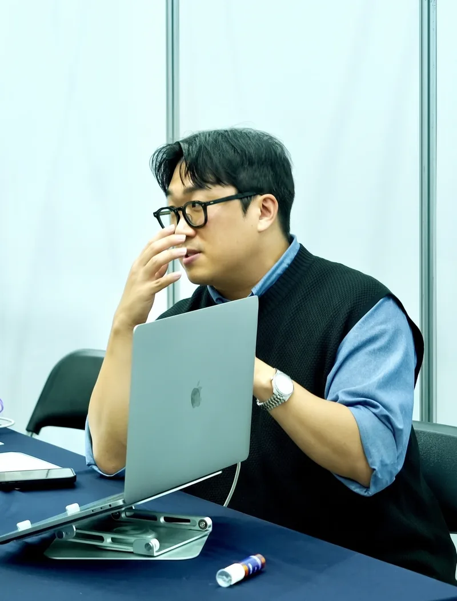
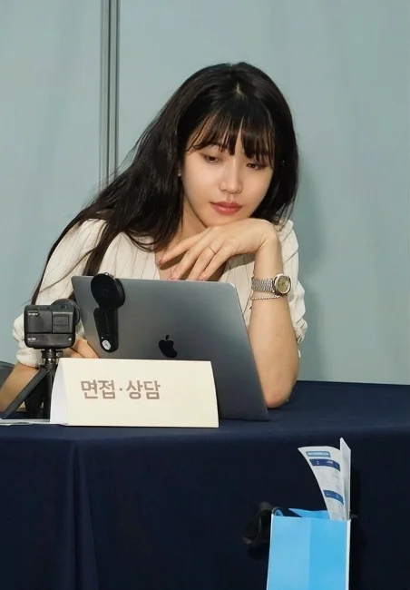
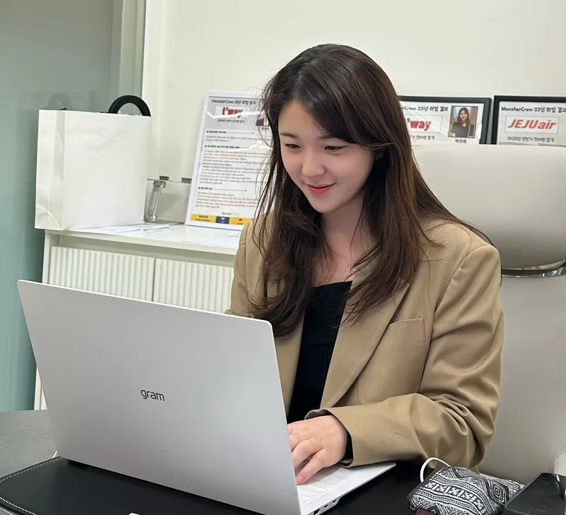
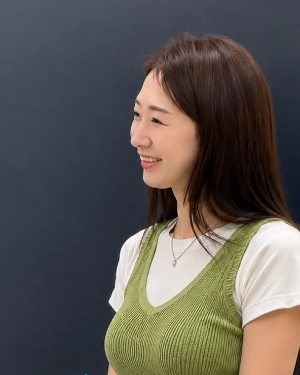

새로운 커리어가
시작되는 순간
새로운 커리어가
시작되는 순간
2주 · 하루 한 번 미션 · 완주 시 3만원 전액 환급
분야마다 전담 연구원이 설계합니다.

권성호
승무원 교육 11년 · 누적 3,500명+

박새암
객실승무원 9년 · 면접관

고은지
합격생 다수 배출 · 브랜딩
최보민
대한항공 국제선 · 부사무장

김유리
대한항공 부사무장 · 기내방송 전문
면접관의 귀로 직접 판정해 보세요.

두 목소리를 모두 들어보세요
모두 같은 사람의 단 2주 전후입니다.
세 가지 질문이면, 나에게 맞는 챌린지를 알려드려요.
3문항 · 약 20초
매일 코치 피드백을 받고, 달라진 내 목소리를 직접 비교해요.
이 리포트, 나만의 것으로.회원가입하면 홍길동 님처럼 매일의 성장이 기록됩니다.
지금 시작하기